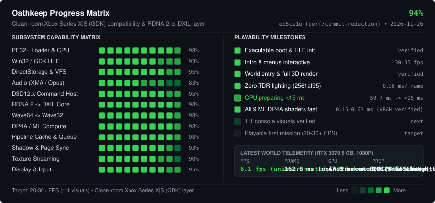

Oathkeep
Clean-room Xbox Series X|S (GDK) compatibility & RDNA 2-to-DXIL layer
Overall Matrix
95%
Latest World FPS
1.9-3.0 fps in diag-visual-merged (all 4 visual-artifact swarm workers merged at b6b9b0e; 0 TDRs/crashes, 0 depth-plane misses, 0 CBV/buffer-view/0x1c8/0x218/0x1a8 warnings, 6b82bc7d22016cb5 translated)
Frame / GPU
335.3-527.7 ms in diag-visual-merged (lead character/hair/eyes/DOF/outdoor vehicles crisp; fixing 3 remaining visual blockers before FPS optimization swarm) / 0.0-110.5 ms (149.1s TIMEOUT_CLEAN; depth planes 1.3/f synced 0/0, 10330 aligned view copies)
CPU Preparing
135.1-210.5 ms in diag-visual-merged (35132 waiting textures + 1M heap cap + 1 wave64 shader 02384a60fda6f2d0 left to polish before 20-30+ FPS swarm)

Playability Milestones
Executable boot & HLE initverified
Intro & menus interactive30-35 fps
World entry & full 3D renderverified
Zero-TDR lighting (2561af95)0.36 ms/frame
CPU preparing <15 ms59.7 ms -> <15 ms
All 9 ML DP4A shaders fast0.15-0.63 ms (VRAM verified)
1:1 console visuals verifiedcrisp lead/hair/DOF/cars; fixing NPC faces/posters
Playable first mission (20-30+ FPS)target
Subsystem Breakdown
| Subsystem | Progress | Score | Notes |
|---|---|---|---|
| PE32+ Loader & CPU | 98% | Native x86-64 loading, TLS redirection, console CPU emulation | |
| Win32 / GDK HLE | 93% | System libraries, threading, memory commit, input, saves | |
| DirectStorage & VFS | 95% | Async streaming, BCPack decode, read-only title mount | |
| Audio (XMA / Opus) | 83% | XMA2 & Opus decode pipelines active | |
| D3D12.x Command Host | 95% | Async relay queue, bindless heaps, indirect mesh/compute | |
| RDNA 2 -> DXIL Core | 98% | SM 6.6 dynamic resources, mesh/compute/pixel translation | |
| Wave64 -> Wave32 | 98% | 2561af95 verified 0.36 ms/frame (down from 297 ms TDR); zero TDR | |
| DP4A / ML Compute | 98% | VERIFIED in diag-run61: all 9 ML shaders 0.15-0.63 ms in VRAM (155.3 -> 17.0 ms dispatch, 4.8x total GPU speedup) | |
| Pipeline Cache & Queue | 98% | host-pipelines.bin warmed to 258.8 MB (1082 added, only 5 being made at 4772 draws/frame) | |
| Shadow & Page Sync | 98% | 9dcae23 verified in diag-run74: WHY_READ=0, WHY_STALE=0, 0.0 ms GPU wait (LATE_WAIT=3+RELAY=2), page faults -75%, private commit 12.4-13.3 GB, peak 10.9 fps (91.7 ms/f) | |
| Texture Streaming | 90% | Levels-on-demand budgeting for 8 GB VRAM, zero-wait upload | |
| Display & Input | 95% | 1080p presentation, XInput + keyboard fallback, Agility SDK 620 |
Telemetry Progression
| Run | Commit | FPS | Frame | GPU | Preparing | Status |
|---|---|---|---|---|---|---|
| diag-visual-merged | b6b9b0e | 3.0 | 335.3 ms | 0.0-110.5 ms (149.1s TIMEOUT_CLEAN, 0 exceptions/TDRs/refusals) | 135.1-210.5 ms (all 4 visual-artifact swarm workers merged; 0 depth-plane misses, 0 CBV/buffer-view/0x1c8/0x218/0x1a8 warnings, 6b82bc7d22016cb5 translated) | 4-worker visual swarm verified in-world (frame-2100..2148): crisp foreground character/hair/eyes/DOF/outdoor vehicles, 0 depth-plane misses (79/81->0/0), 10330 aligned view copies (0 refused); 3 visual blockers isolated for final polish: VRAM LRU eviction under levels-on-demand (35132 waiting), 1M descriptor heap cap (1245184 requested, 737855 direct), and 1 Wave64 compute shader (02384a60fda6f2d0) |
| diag-run109 | 7f206eb | 9.0 | 111.6 ms | 0.0-10.2 ms (130.5s TIMEOUT_CLEAN, 0 exceptions/TDRs/refusals) | 55.2-145.1 ms (align=256 CBVs still created 2048 overlapping 64 KiB windows -> replace with CBV slab/skip next) | Visual Fixes 3+4 + Worker 1 phase-windowing verified clean! Inline pass_plane + compute depth-to-plane copy-back eliminated both depth-twin counters (0 not given back, 0 used before pass) and fresh texture queue anti-starvation landed cleanly; ruled out both texture backlog (diag-run108: 39.5k uploaded) and depth-twin sync for zero-specular dark faces; next: integrate Worker 3 CPU perf + Worker 4 face/wall pass diagnosis + fix align=256 CBV window explosion |
| diag-run107 | perf/commit-reduction | 10.4 | 96.1 ms | 6.6-15.1 ms (0 hangs/TDRs/exceptions/refusals in 130.4s) | 34.6-80.5 ms (4096+ per-view aligned shadows added copy/alloc overhead) | Visual Fixes 1+2 verified! Integer-RTV blend sanitization fixed mesh PSO f5e50eb2108c425b (0 refused PSOs) and shadow::find_aligned fixed R32G32B32_FLOAT (element=12) SRVs & static unaligned CBVs (0 warnings). Exploding stretched triangles and 2x2 stippling completely gone in 31 captured in-world 3D frames (crisp characters, hair, eyes, stitching, DOF, lighting); remaining: dark faces/interiors (32.6k due textures / SSS check) + phase-window aligned shadows to recover 12.4-15.7+ fps |
| diag-run106 | 77f2abc | 15.7 | 63.7 ms | 0.0 ms median wait (0 hangs/TDRs/exceptions/refusals in 130.3s) | 32.3-51.1 ms (batch_flush 18.6-25.5 ms, stale 6.0-8.2 ms, prelude 2.5-4.3 ms, ask_once 3.1-3.3 ms) | Fix AH1+AH2+AH3a verified clean! Heavy 4010-draw scene +61% (7.7->12.4 fps, 130.2->80.6 ms/f), moves -32% (36.5->24.7 / 17.9->12.8 ms), guards -29%, rec -10%; pinned down visual root causes: refused mesh PSO R8_UINT RTV (format=62) + R32G32B32_FLOAT (element=12) null SRV |
| diag-run105 | 61ccefc | 16.6 | 60.3 ms | 0.0 ms median wait (0 hangs/TDRs/exceptions/refusals in 130.2s) | 31.3-56.3 ms (46.2 ms median: batch_flush 17.9-29.4 ms, stale 4.5-7.6 ms, prelude 3.2-5.3 ms, ask_once 3.1-3.9 ms) | 100% CLEAN 130.2s baseline! Fixed relay hot-hash race (f73fd1a) + VEH guard-page TOCTOU in watch.rs::handle_write_fault (61ccefc). Zero CPU exceptions, zero GPU hangs, zero refusals, 7.7-16.6 fps steady 3D (12.8 median / 16.6 peak) |
| diag-run98 | c059f27 | 17.5 | 57.2 ms | 0.0 ms median wait (80-93% busy; hit unhandled 0xc0000005 at ~125s) | 31.2-53.4 ms (43.9 ms median: batch_flush 22.9 ms, stale 5.8 ms, guards 8.6 ms, cfu 0.8 ms) | Fix AF1-AF2 peak 17.5 fps (57.2 ms/f), but late crash at ~125s traced to AF1/AF2/AG2 races (subsequently reverted & fixed in f73fd1a + 61ccefc) |
| diag-run94 | a24cbeb | 16.8 | 59.4 ms | 0.0-2.6 ms wait (0 hangs/TDRs/refusals in 130.3s at default 512 KiB) | 27.5-45.5 ms NEW LOW (batch_flush 14.5-24.8 ms, guards 4.6-15.3 ms, stale 4.2-8.5 ms, sweep 0.08-0.60 ms) | Fix AC1-AC4 verified clean: pre_prep sweep -85% (0.08-0.60 ms), guards -55% (4.6-15.3 ms), alias_apply -65% (1.19-5.21 ms), watches -50% (6.72-17.84 ms), make_at miss -50% (3.16-11.17 ms), true indirect 4.56-11.39 ms, NEW ALL-TIME LOW 27.5 ms preparing & 79.1 ms rec (11.7-16.8 fps steady); exposed next 3 blockers: 13.2-18.1 ms card copy-back (20.8 MB), 14.5-24.8 ms batch_flush, and 10.8-13.7 ms post-present gap -> next: Fix AD |
| diag-run93 | perf/commit-reduction | 18.8 | 53.2 ms | 0.0-1.7 ms wait (0 hangs/TDRs/refusals in 135.6s at default 512 KiB) | 30.0-54.0 ms (batch_flush 14.5-27.1 ms, guards 10.9-26.4 ms, stale 4.2-7.6 ms, sweep 0.43-1.72 ms) | Fix AB1-AB4 verified clean: NEW ALL-TIME PEAK 18.8 fps (53.2 ms/f, drw=994), steady 11.3-17.2 fps (17.2 fps drw=1135, 16.9 fps drw=1510, 14.3 fps drw=3140), pre_prep sweep cut to 0.43-1.72 ms, make_at cbv -50% (4.0-7.9 ms), tables non-make_at cut; next: Fix AC (throttle !behind sweep, cut batch_flush/alias_apply + indirect 45-132 ms + make_at miss/post -> 20-30+ FPS) |
| diag-run92 | ad52400 | 17.9 | 55.8 ms | 0.0 ms wait (0 hangs/TDRs in 130s at default 512 KiB) | 35.0-51.8 ms (batch_flush 18.2-27.6 ms, stale 4.8-6.0 ms, pre_prep sweep 1.7-5.2 ms) | Fix AA1-AA4 verified clean (isolated MIN_KB=128 hang from run91): 17.9 fps peak, drw=5788 batch_flush -39% (30->18.2 ms), stale -57% (11.4->4.9 ms), make_at -45% (77.2->42.3 ms), stage_cache 62% 1-shot bypass, pre_prep exposed WHY_SYNC sweep stall (1.7-5.2 ms/f, lock_wait 0.00 ms) -> next: Fix AB |
| diag-run90 | perf/commit-reduction | 16.6 | 60.4 ms | 0.0 ms wait (67-86% busy) | 34.8-46.6 ms (run_deferred 1.5-1.9 ms, snapshots 1.3-1.6 ms, back 13.6-18.4 ms) | Fix Z1-Z4 verified: run_deferred -68% (5.0->1.6 ms), snapshots -53% (3.0->1.4 ms), copy-back -30% (24->16 ms), compared MB -56% (33->14.4 MB), heavy 3D scenes +18-32% (drw=3958 9.8->11.6, drw=3449 11.7->13.8, drw=2473 10.4->13.7 fps); next: Fix AA (2-hit stage-cache admission filter + parallel card stale_under_flights + 128 KB card threshold) |
| diag-run89b | cafadfe | 18.3 | 54.5 ms | 0.0 ms wait (67-84% busy) | 33.0-45.9 ms (batch_flush 12.4-22.5 ms, moves 12.8-34.8 ms) | Fix Y1-Y4 verified: NEW PEAK 18.3 fps (54.5 ms/f), heavy scenes +17-38% (10.0->13.8, 9.3->11.9, 8.4->9.8 fps), 0 crashes/TDRs/refusals; next: Fix Z (batched CopyDescriptors, parallel GpuWrite flush, CARD_BUFFERS_MIN_KB=512, alias_apply hot-skip) |
| diag-run88 | 56618a9 | 17.4 | 57.3 ms | 0.0-1.5 ms wait (75-98% busy) | 29.5-64.9 ms (batch_flush 12.4-27.9 ms, moves 12.5-66.2 ms) | Fix X1-X3 verified: new peak 17.4 fps (57.3 ms/f), heavy-scene prep -28%, batch_flush -43%, moves -48%, rec -26%; 0 crashes/TDRs/refusals |
| diag-run82 | perf/commit-reduction | 15.9 | 62.7 ms | 0.0 ms wait (53-99% busy) | 36.5-53.1 ms (batch_flush 15.3-20.3 ms, moves shadow 12.1-17.5 ms, rec 121.6-129.2 ms, make_at 32.5-34.1 ms) | Fix S1-S3 verified: heavy scenes +16-43% (8.9->12.7, 10.9->11.9, 6.8->7.9 fps), lowest rec/make_at/batch_flush yet; stage_cache counter exposed 3.6k-7.3k misses/f from global SHADOW_GEN bumps + PrepOtherUs 6.4-10.9 ms -> next: Fix T |
| diag-run81 | 2fff334 | 17.3 | 57.7 ms | 0.0 ms wait (71-98% busy) | 36.2-57.4 ms (batch_flush 16.4-27.6 ms, moves shadow 11.3-29.7 ms, rec 134.9 ms) | New peak 17.3 fps (57.7 ms/f, +10% over run79)! Fix R1-R4 verified across all 3D intervals: between-submissions 30.7->23.4 ms, indirect miss_step -20%, 0 refusals/crashes |
| diag-run79 | 1b671a8 | 15.7 | 63.6 ms | 0.0-1.4 ms wait (71-99% busy) | 36.6-60.3 ms (batch_flush 16.0-25.7 ms, moves shadow 13.6-18.6 ms, sparse reads 0.3 ms) | New peak 15.7 fps (+32%, steady 10.4-15.7 fps)! Fix Q1-Q4 verified: copies MB -60% (116->44 MB), moves shadow -60% (33-72->13.6-18.6 ms), sparse reads 0.3 ms (-99%), submit kernel -77% (20.1->4.7 ms), GUARD_HOT=0 beats GUARD_HOT=1 (15.7 vs 6.9 fps); next: Fix R1-R4 CPU staging descriptor cache + indirect scratch growth |
| diag-run78 | 8e04090 | 11.9 | 83.8 ms | 0.0 ms wait (50-74% busy, down from 93-97%; 95-98% cbv_scratch hoisted to prelude) | 46.5-72.4 ms (batch_flush 25.3-42.7 ms, guards 23.8-45.8 ms, moves shadow 33.2-72.2 ms) | New peak 11.9 fps (heavy scene +48% to 7.4 fps)! Fix P1a/P1b/P1c/P2b verified: bindless_wr -96% (1526->52-97), inline barriers -98% (2622->57-97), GPU busy 93-97%->50-74%; now 100% CPU-bound -> next: cut guards/alias_apply + batch_flush + recording make_at |
| diag-run76 | 45708fb | 10.6 | 94.4 ms | 0.0 ms wait (82-94% busy; 2.8k-4.7k mid-list gpu_copy_scratch barriers/f) | 45.7-66.0 ms (batch_flush 23.8-36.9 ms, guards 20.7-34.1 ms) | Fix O1+O2 verified: dynamic slot refusals 576->0, dropped indirects 1313->0, uncacheable 9161->0, fresh_tables hits 6-8x (1656-4438), cbv_scratch hits 1519-5517; next: prelude-hoist gpu_copy_scratch + multi-buffer scratch ring + batch_flush |
| diag-run74 | 9dcae23 | 10.9 | 91.7 ms | 0.0 ms wait (LATE_WAIT=3 + RELAY=2, 72-75% busy, 13.3-16.6 ms async copy-back) | 44.2-53.9 ms (batch_flush 21.5-27.3 ms, heap_buffers 7.1-9.6 ms) | New peak 10.9 fps! Fixes M1+M2 verified: WHY_READ=0, WHY_STALE=0, 0.0 ms GPU wait; next: eliminate dynamic descriptor exhaustion (128-1359 refused) & cut recording (176-232 ms) + batch_flush (21.5 ms) |
| diag-run72 | 42be757 | 8.5 | 117.8 ms | 50.6-67.8 ms WHY_READ wait (2751 draws) | 36.6-68.5 ms (batch_flush 29.1 ms, moves 33.3 ms) | Fixes L1-L4 verified: WHY_STALE=0, page faults -75% (2887/f), private commit 12.4-12.56 GB; diagnosed LOOSE shadow_cache aliasing (WHY_READ) & dynamic descriptor refusals |
| diag-run67 | 2912eee | 9.2 | 109.0 ms | 27.4 ms wait (3615 draws, 68-78% busy, 0.0 ms present stall) | 69.6 ms (batch_flush 37.3-43.6 ms, heap_buffers 5.3-7.3 ms) | LATE_WAIT=3 + RELAY=2 + GUARD_HOT=0 + BAKE_TEXTURES_MS=4: scan_card 81.3->3.6 ms (0xae00000 28.5->5.3 ms); next: barrier_groups (842/f), GetWriteWatch (31.5 ms) + 211 MB copies, WHY_READ relay stall (28 ms) |
| diag-run66 | 2912eee | 7.9 | 126.9 ms | 34.3 ms (2984 draws, 54% busy, uav_emitted 3) | 82.1 ms (batch_flush 53.7 ms, read_fast 10.3 ms) | Fixes D/E/F verified: 64-shard GUARDS (read_fast -85%), dispatch indirect windowing (uav_emitted 1079->3, GPU -20 ms), copy_hot 147->11 ms |
| diag-run63-warm | bc99622 | 5.4 | 183.9 ms | 49.3 ms (3467 draws, 54-59% busy) | 125.3 ms (0 PSOs left, run_deferred 10.4 ms) | run_deferred -43%, copy queue -51% (19.3 ms), copy-back -33% (42.3 ms), fallbacks -85% (35); remaining: GUARDS 55.9 ms (0xae00000 29.5 ms), mirror 18.6 ms, 1519 indirect clamps on GPU |
| diag-run62 | eb5ce1e | 6.1 | 162.8 ms | 47.9 ms (4772 draws, 55% busy) | 106.7 ms (warm 5 PSOs left) | Uninstrumented 4772 draws/frame (12x more draws); host-pipelines.bin 258.8 MB; heap_buffers 18.1 ms; next: guard churn + copy-queue stall |
| diag-run61 | 15e6154 | 3.7 | 270.7 ms | 35.2 ms timed (ML <=0.63 ms) | 103.3 ms (cold) | ML VRAM fix verified (4.8x GPU speedup, GPU 33% busy); CPU-bound now |
| diag-run60 | 4a14eaa | 2.7 | 376.1 ms | 168.7 ms (135.6 ms ML) | 108.2 ms (cold) | Zero TDR; all 9/9 ML shaders dumped for DP4A diff |
| diag-run59b | 40200b5 | 5.8 | 172.1 ms | 27.7 ms (no ML) | 59.7 ms | Zero TDR; 2561af95 0.36 ms/frame; ask_once 4.5 ms |
| diag-run56-gpu | 542b511 | 5.4 | 185.0 ms | 118 ms | 75 ms | DP4A sped 5/9 ML shaders; 4/9 regressed |
| diag-run54b | a9461b1 | 6.2 | 161.0 ms | 127 ms | 76 ms | Baseline GPU timing (9 ML shaders 83 ms) |
| diag-run52c | f78ba1b | 4.9 | 204.0 ms | ~130 ms | 78 ms | World entry baseline (cold PSOs) |